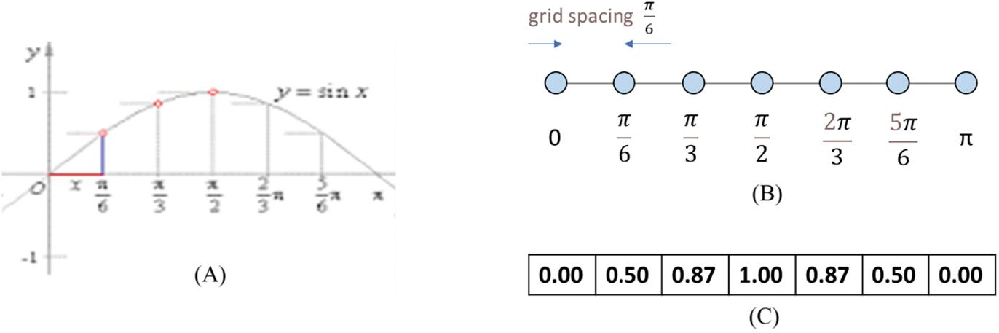
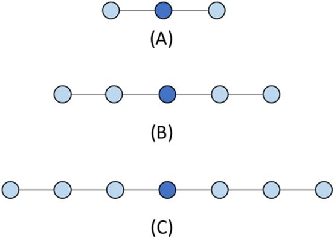
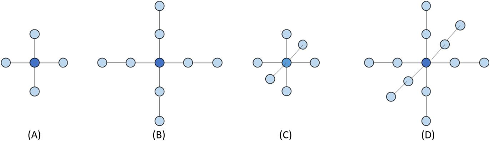
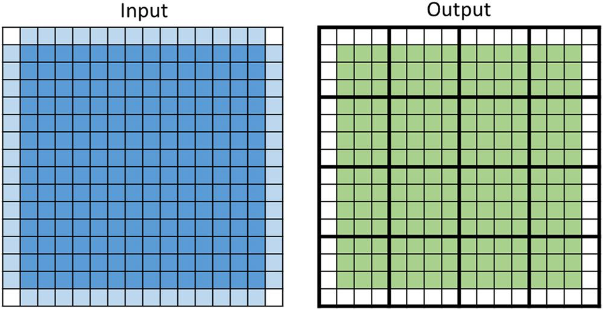
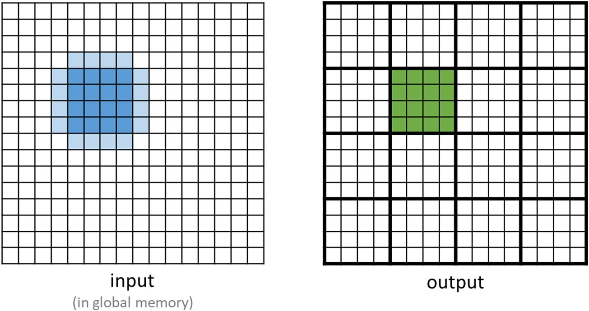
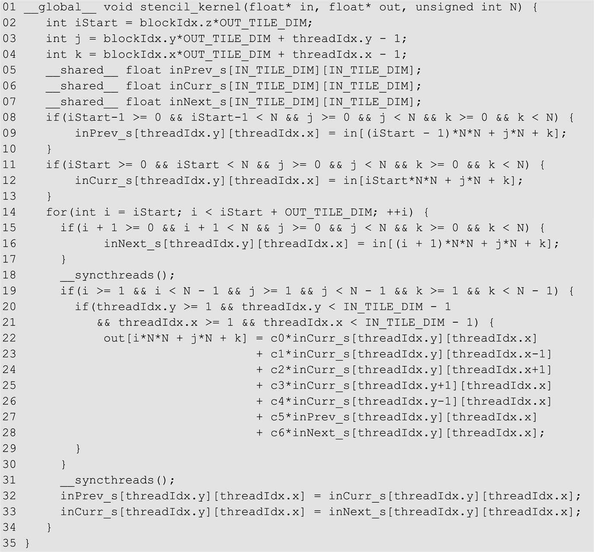
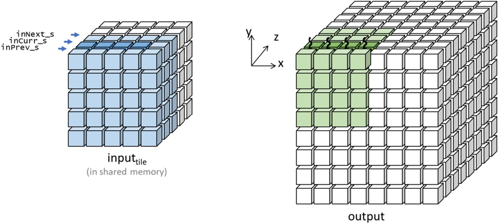
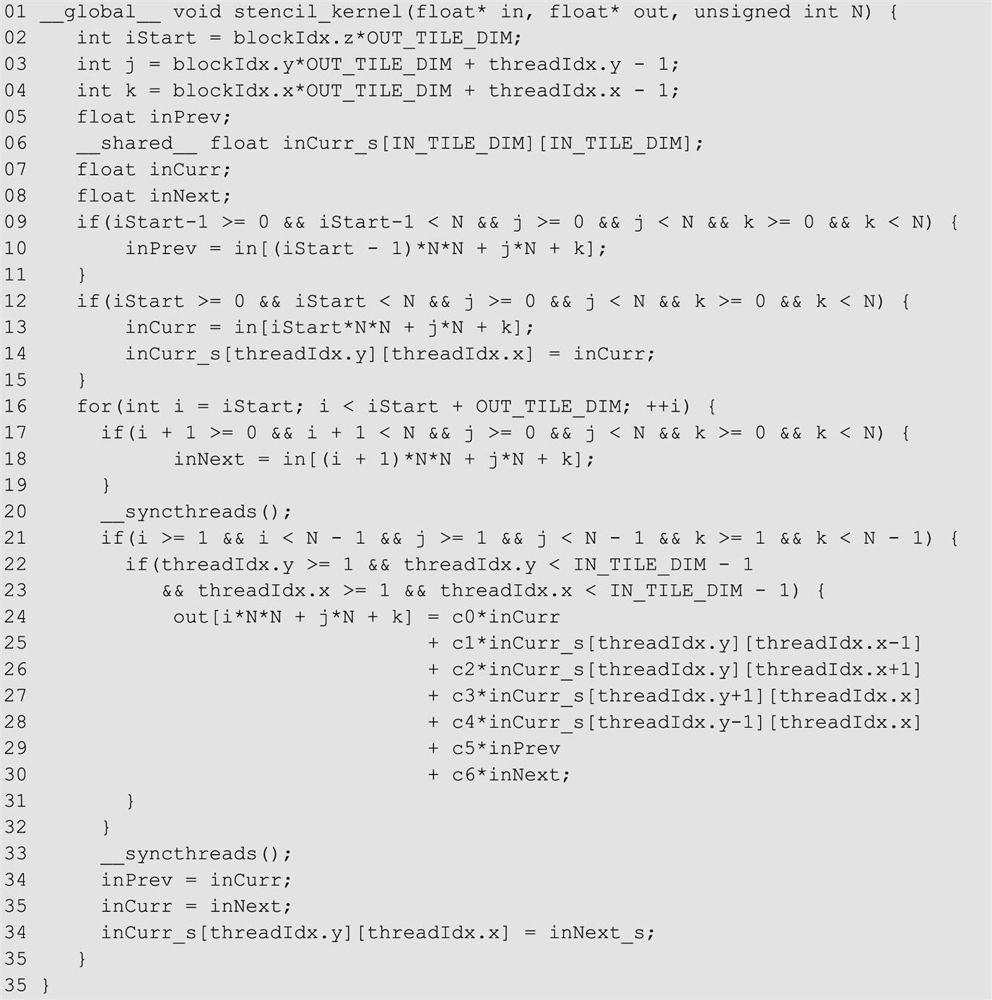

Stencil
Abstract
In this chapter we dive into stencil sweep computation, which seems to be just convolution with special filter patterns. However, because the stencils come from discretization and numerical approximation of derivatives in solving differential equations, they have two characteristics that motivate and enable new optimizations. This chapter focuses on these new optimization opportunities and challenges. First, stencil sweeps are typically done on three-dimensional (3D) grids, whereas convolution is typically done on two-dimensional (2D) images or a small number of time slices of 2D images. This makes the tiling considerations different between the two and motivates thread coarsening for 3D stencils to enable larger input tiles and more data reuse. Second, the stencil patterns can sometimes enable register tiling of input data to further improve data access throughput and alleviate shared memory pressure.
Keywords
Stencil; stencil sweep; numerical methods; discretization; differential equations; boundary condition problems; finite difference method; domain decomposition; tiling; ghost cells; halo cells; data reuse; tiling efficiency; thread coarsening; shared memory tiling; register tiling
Stencils are foundational to numerical methods for solving partial differential equations in application domains such as fluid dynamics, heat conductance, combustion, weather forecasting, climate simulation, and electromagnetics. The data that is processed by stencil-based algorithms consists of discretized quantities of physical significance, such as mass, velocity, force, acceleration, temperature, electrical field, and energy, whose relationships with each other are governed by differential equations. A common use of stencils is to approximate the derivative values of a function based on the function values within a range of input variable values. Stencils bear strong resemblance to convolution in that both stencils and convolution calculate the new value of an element of a multidimensional array based on the current value of the element at the same position and those in the neighborhood in another multidimensional array. Therefore stencils also need to deal with halo cells and ghost cells. Unlike convolution, a stencil computation is used to iteratively solve the values of continuous, differentiable functions within the domain of interest. The data elements and the weight coefficients that are used for the elements in the stencil neighborhood are governed by the differential equations that are being solved. Some stencil patterns are amenable to optimizations that are not applicable to convolution. In the solvers in which initial conditions are iteratively propagated through the domain, the calculations of output values may have dependences and need to be performed according to some ordering constraints. Furthermore, because of the numerical accuracy requirements in solving differential questions, the data that is processed by stencils tends to be high-precision floating data that consumes more on-chip memory for tiling techniques. Because of these differences, stencils tend to motivate different optimizations than convolution does.
8.1 Background
The first step in using computers to numerically evaluate and solve functions, models, variables, and equations is to convert them into a discrete representation. For example, Fig. 8.1A shows the sine function for . Fig. 8.1B shows the design of a one-dimensional (1D) regular (structured) grid whose seven grid points correspond to x values that are of constant spacing ( apart. In general, structured grids cover an n-dimensional Euclidean space with identical parallelotopes (e.g., segments in one dimension, rectangles in two dimension, bricks in three dimensions). As we will see later, with structured grids, derivatives of variables can be conveniently expressed as finite differences. Therefore structured grids are used mainly in finite-difference methods. Unstructured grids are more complex and are used in finite-element and finite-volume methods. For simplicity we will use only regular grids and thus finite-difference methods in this book.
apart. In general, structured grids cover an n-dimensional Euclidean space with identical parallelotopes (e.g., segments in one dimension, rectangles in two dimension, bricks in three dimensions). As we will see later, with structured grids, derivatives of variables can be conveniently expressed as finite differences. Therefore structured grids are used mainly in finite-difference methods. Unstructured grids are more complex and are used in finite-element and finite-volume methods. For simplicity we will use only regular grids and thus finite-difference methods in this book.

 . (B) Design of a regular grid with constant spacing ( between grid point for discretization. (C) Resulting discrete representation of the sine function for .
. (B) Design of a regular grid with constant spacing ( between grid point for discretization. (C) Resulting discrete representation of the sine function for .Fig. 8.1C shows the resulting discrete representation in which the sine function is represented with its values at the seven grid points. In this case, the representation is stored in a 1D array F. Note that the x values are implicitly assumed to be , where i is the index of the array element. For example, the x value that corresponds to element F[2] is 0.87, which is the sine value of .
In a discrete representation, one needs to use an interpolation technique such as linear or splines to derive the approximate value of the function for x values that do not correspond to any of the grid points. The fidelity of the representation or how accurate the function values from these approximate interpolation techniques are depends on the spacing between grid points: The smaller the spacing, the more accurate the approximations. By decreasing the spacing, one can improve the accuracy of the representation at the cost of more storage and, as we will see, more computation when we solve a partial differential equation.
The fidelity of a discrete representation also depends on the precision of the numbers used. Since we are approximating continuous functions, floating-point numbers are typically used for the grid point values. Mainstream CPUs and GPUs support double-precision (64-bit), single-precisions (32-bit), and half-precision (16-bit) representations today. Among the three, double-precision numbers offer the best precision and the most fidelity in discrete representations. However, modern CPUs and GPUs typically have much higher arithmetic computation throughput for single-precision and half-precision arithmetic. Also, since double-precision numbers consist of more bits, reading and writing double-precision numbers consumes more memory bandwidth. Storing these double-precision numbers also requires memory capacity. This can pose a significant challenge for tiling techniques that require a significant number of grid point values to be stored in on-chip memory and registers.
Let us discuss the definition of stencils with a little more formalism. In mathematics a stencil is a geometric pattern of weights applied at each point of a structured grid. The pattern specifies how the values of the grid point of interest can be derived from the values at neighboring points using a numerical approximation routine. For example, a stencil may specify how the derivative value of a function at a point of interest is approximated by using finite differences between the values of the function at the point and its neighbors. Since partial differential equations express the relationships between functions, variables, and their derivatives, stencils offer a convenient basis for specifying how finite difference methods numerically compute the solutions to partial differential equations.
For example, assume that we have  discretized into a 1D grid array F and we would like to calculate the discretized derivative of , . We can use the classic finite difference approximation for the first derivative:
discretized into a 1D grid array F and we would like to calculate the discretized derivative of , . We can use the classic finite difference approximation for the first derivative:
That is, the derivative of a function at point x can be approximated by the difference of the function values at two neighboring points divided by the difference of the x values of these neighboring points. The value h is the spacing between neighboring points in the grid. The error is expressed by the term meaning that the error is proportional to the square of h. Obviously, the smaller the h value, the better the approximation. In our example in Fig. 8.1 the h value is or 0.52. The value is not small enough to make the approximation error negligible but should be able to result in a reasonably close approximation.
Since the grid spacing is h, the current estimated f(x−h), f(x), and f(x+h) values are in F[i−1], F[i], and F[i+1], respectively, where x=i*h. Therefore we can calculate the derivative values of f(x) at each grid point into an output array FD:
for all the grid points. This expression can be rewritten as
That is, the calculation of the estimated function derivative value at grid point involves the current estimated function values at grid points [i−1, i, i+1] with coefficients , 0, , which defines a 1D three-point stencil, as shown in Fig. 8.2A. If we are approximating higher derivative values at grid points, we would need to use higher-order finite differences. For example, if the differential equation includes up to the second derivative of f(x), we will use a stencil involving [i−2, i−1, i, i+1, i+2], which is a 1D five-point stencil, as shown in Fig. 8.2B. In general, if the equation involves up to the nth derivative, the stencil will involve n grid points on each side of the center grid point. Fig. 8.2C shows a 1D seven-point stencil. The number of grid points on each side of the center point is called the order of the stencil, as it reflects the order of the derivative being approximated. According to this definition, the stencils in Fig. 8.3 are of order 1, 2, and 3, respectively.


It should be obvious that solving a partial differential equation of two variables would require the function values to be discretized into a two-dimensional (2D) grid, and we will use a 2D stencil to calculate the approximate partial derivatives. If the partial differential equation involves exclusively the partial derivatives by only one of the variables, for example, , but not , we can use 2D stencils whose selected grid points are all along the x axis and y axis. For example, for a partial differential equation involving only first derives by x and first derivatives by y, we can use a 2D stencil that involves two grid points on each side of the center point along the x axis and the y axis, which results in the 2D five-point stencil in Fig. 8.3A. If the equation involves up to second-order derivatives only by x or by y, we will use a 2D nine-point stencil, as shown in Fig. 8.3B.
Fig. 8.4 summarizes the concepts of discretization, numerical grids, and application of stencils on the grid points. Functions are discretized into their grid point values which are stored in multi-dimensional arrays. In Fig. 8.4 a function of two variables is discretized as a 2D grid which is stored as a 2D array. The stencil that is used in Fig. 8.4 is 2D and is used to calculate an approximate derivative value (output) at each grid point from function values at the neighboring grid points and the grid point itself. In this chapter we will focus on the computation pattern in which a stencil is applied to all the relevant input grid points to generate the output values at all grid points, which will be referred to as a stencil sweep.
8.2 Parallel stencil: a basic algorithm
We will first present a basic kernel for stencil sweep. For simplicity we assume that there is no dependence between output grid points when generating the output grid point values within a stencil sweep. We further assume that the grid point values on the boundaries store boundary conditions and will not change from input to output, as illustrated in Fig. 8.5. That is, the shaded inside area in the output grid will be calculated, whereas the unshaded boundary cells will remain the same as the input values. This is a reasonable assumption, since stencils are used mainly to solve differential equations with boundary conditions.

Fig. 8.6 shows a basic kernel that performs a stencil sweep. This kernel assumes that each thread block is responsible for calculating a tile of output grid values and that each thread is assigned to one of the output grid points. A 2D tiling example of the output grid in which each thread block is responsible for a 4×4 output tile is shown in Fig. 8.5. However, since most real-world applications solve three-dimensional (3D) differential equations, the kernel in Fig. 8.6 assumes a 3D grid and a 3D seven-point stencil like the one in Fig. 8.3C. The assignment of threads to grid points is done with the familiar linear expressions involving the x, y, and z fields of blockIdx, blockDim, and threadIdx (lines 02–04). Once each thread has been assigned to a 3D grid point, the input values at that grid point and all neighboring grid points are multiplied by different coefficients (c0 to c6 on lines 06–12) and added. The values of these coefficients depend on the differential equation that is being solved, as we explained in the background section.
Let us now calculate the floating-point to global memory access ratio for the kernel in Fig. 8.6. Each thread performs 13 floating-point operations (seven multiplications and six additions) and loads seven input values that are 4 bytes each. Therefore the floating-point to global memory access ratio for this kernel is 13/(7*4)=0.46 OP/B (operations per byte). As we discussed in Chapter 5, Memory Architecture and Data Locality, this ratio needs to be much larger for the performance of the kernel to be reasonably close to the level that is supported by the arithmetic compute resources. We will need to use a tiling technique like that discussed in Chapter 7, Convolution, to elevate the floating-point to global memory access ratio.
8.3 Shared memory tiling for stencil sweep
As we saw in Chapter 5, Memory Architecture and Data Locality, the ratio of floating-point operations to global memory accessing operations can be significantly elevated with shared memory tiling. As the reader probably suspected, the design of shared memory tiling for stencils is almost identical to that of convolution. However, there are a few subtle but important differences.
Fig. 8.7 shows the input and output tiles for a 2D five-point stencil applied to a small grid example. A quick comparison with Figure 7.11 shows a small difference between convolution and stencil sweep: The input tiles of the five-point stencil do not include the corner grid points. This property will become important when we explore register tiling later in this chapter. For the purpose of shared memory tiling, we can expect the input data reuse in a 2D five-point stencil to be significantly lower than that in a 3×3 convolution. As we discussed in Chapter 7, Convolution, the upper bound of the arithmetic to global memory access ratio of a 2D 3×3 convolution is 4.5 OP/B. However, for a 2D five-point stencil, the upper bound on the ratio is only 2.5 OP/B. This is because each output grid point value uses only five input grid values, compared to the nine input pixel values in 3×3 convolution.

The difference is even more pronounced when the number of dimensions and the order of the stencil increases. For example, if we increase the order of the 2D stencil from 1 (one grid point on each side, five-point stencil) to 2 (two grid points on each side, nine-point stencil), the upper bound on the ratio is 4.5 OP/B, compared to 12.5 OP/B for its counterpart 2D 5×5 convolution. This discrepancy is further pronounced when the order of the 2D stencil is increased to 3 (three grid points on each side, 13-point stencil). The upper bound on the ratio is 6.5 OP/B, compared to 24.5 OP/B for its counterpart 2D 7×7 convolution.
When we move into 3D, the discrepancy between the upper bound on the arithmetic to global memory access ratio of stencil sweep and convolution is even more pronounced. For example, a 3D third-order stencil (3 points on each side, 19-point stencil) has an upper bound of 9.5 OP/B, compared to 171.5 OP/B for its counterpart 3D 7×7×7 convolution. That is, the benefit of loading of an input grid point value into the shared memory for a stencil sweep can be significantly lower than that for convolution, especially for 3D, which is the prominent use case for stencils. As we will see later in the chapter, this small but significant difference motivates the use of thread coarsening and register tiling in the third dimension.
Since all the strategies for loading input tiles for convolution apply directly to stencil sweep, we present in Fig. 8.8 a kernel like the convolution kernel in Figure 7.12 in which blocks are of the same size as input tiles and some of the threads are turned off in calculating output grid point values. The kernel is adapted from the basic stencil sweep kernel in Fig. 8.6, so we will focus only on the changes that are made during the adaptation. Like the tiled convolution kernel, the tiled stencil sweep kernel first calculates the beginning x, y, and z coordinates of the input patch that is used for each thread. The value 1 that is subtracted in each expression is because the kernel assumes a 3D seven-point stencil with one grid point on each side (lines 02–04). In general, the value that is subtracted should be the order of the stencil.
The kernel allocates an in_s array in shared memory to hold the input tile for each block (line 05). Every thread loads one input element. Like the tiled convolution kernel, each thread loads the beginning element of the cubic input patch that contains the stencil grid point pattern. Because of the subtraction in lines 02–04, it is possible that some of the threads may attempt to load ghost cells of the grid. The conditions i >=0, j >=0, and k >=0 (line 06) guard against these out-of-bound accesses. Because the blocks are larger than the output tiles, it is also possible that some of the threads at the end of the x, y, and z dimensions of a block attempt to access the ghost cells outside the upper bound of each dimension of the grid array. The conditions I < N, j < N, and k < N (line 6) guard against these out-of-bound accesses. All threads in the thread block collaboratively load the input tile into the shared memory (line 07) and use the barrier synchronization to wait until all input tile grid points are in the shared memory (line 09).
Each block calculates its output tile in lines 10–21. The conditions in line 10 reflect the simplifying assumption that the boundary points of both the input grid and the output hold initial condition values and do not need to be calculated from iteration to iteration by the kernel. Therefore threads whose output grid points fall on these boundary positions are turned off. Note that the boundary grid points form a layer at the surface of the grid.
The conditions in lines 12–13 turn off the extra threads that were launched just to load the input tile grid points. The conditions allow those threads whose i, j, and k index values fall within the output tile to calculate the output grid points selected by these indices. Finally, each active thread calculates its output grid point value using the input grid points specified by the seven-point stencil.
We can evaluate the effectiveness of shared memory tiling by calculating the arithmetic to global memory access ratio that this kernel achieves. Recall that the original stencil sweep kernel achieved a ratio of 0.46 OP/B. With the shared memory tiling kernel, let us assume that each input tile is a cube with T grid points in each dimension and that each output tile has T−2 grid points in each dimension. Therefore each block has (T−2)3 active threads calculating output grid point values, and each active thread performs 13 floating-point multiplication or addition operations, which is a total of 13*(T−2)3 floating-point arithmetic operations. Moreover, each block loads an input tile by performing T3 loads that are 4 bytes each. Therefore the floating point to global memory access ratio of the tiled kernel can be calculated as follows:
That is, the larger the T value, the more the input grid point values are reused. The upper bound on the ratio as T increases asymptotically is 13/4=3.25 OP/B.
Unfortunately, the 1024 limit of the block size on current hardware makes it difficult to have large T values. The practical limit on T is 8 because an 8×8×8 thread block has a total of 512 threads. Furthermore, the amount of shared memory that is used for the input tile is proportional to T3. Thus a larger T dramatically increases the consumption of the shared memory. These hardware constraints force us to use small tile sizes for the tiled stencil kernel. In contrast, convolution is often used to process 2D images in which larger tile dimensions (T value) such as 32×32 can be used.
There are two major disadvantages to the small limit on the T value that is imposed by the hardware. The first disadvantage is that it limits the reuse ratio and thus the compute to memory access ratio. For T=8 the ratio for a seven-point stencil is only 1.37 OP/B, which is much less than the upper bound of 3.25 OP/B. The reuse ratio decreases as the T value decreases because of the halo overhead. As we discussed in Chapter 7, Convolution, halo elements are less reused than the nonhalo elements are. As the portion of halo elements in the input tile increases, both the data reuse ratio and the floating-point to global memory access ratio decrease. For example, for a convolution filter with radius 1, a 32×32 2D input tile has 1024 input elements. The corresponding output tile has 30×30=900 elements, which means that 1024−900=124 of the input elements are halo elements. The portion of halo elements in the input tile is about 12%. In contrast, for a 3D stencil of order 1, an 8×8×8 3D input tile has 512 elements. The corresponding output tile has 6×6×6=216 elements, which means that 512−216=296 of the input elements are halo elements. The portion of halo elements in the input tile is about 58%!
The second disadvantage of a small tile size is that it has an adverse impact on memory coalescing. For an 8×8×8 tile, every warp that consists of 32 threads will be responsible for loading four different rows of the tile that have eight input values each. Hence on the same load instruction the threads of the warp will access at least four distant locations in global memory. These accesses cannot be coalesced and will underutilize the DRAM bandwidth. Therefore T needs to be a much larger value for the reuse level to be closer to 3.25 OP/B and to enable full use of the DRAM bandwidth. The need for a larger T motivates the approach that we will cover in the following section.
8.4 Thread coarsening
As we mentioned in the previous section, the fact that stencils are typically applied to 3D grids and the sparse nature of the stencil patterns can make stencil sweep a less profitable target of shared memory tiling than convolution. This section presents the use of thread coarsening to overcome the block size limitation by coarsening the work that is done by each thread from calculating one grid point value to a column of grid point values, as illustrated in Fig. 8.9. Recall from Section 6.3 that with thread coarsening, the programmer partially serializes parallel units of work into each thread and reduces the price paid for parallelism. In this case, the price that is paid for parallelism is the low data reuse due to the loading of halo elements by each block.
In Fig. 8.9 we assume that each input tile consists of grid points. Note that to make the inside of the input tile visible, we have peeled away the front, left, and top layers of the tile. We also assume that each output tile consists of grid points. The x, y, and z directions in the illustration are shown with the coordinate system for the input and the output. Each x-y plane of the input tile consists of grid points, and each x-y plane of the output tile consists of grid points. The thread block that is assigned to process this tile consists of the same number of threads as one x-y plane of the input tile (i.e., 6×6). In the illustration we show only the internal threads of the thread block that are active in computing output tile values (i.e., 4×4).
Fig. 8.10 shows a kernel with thread coarsening in the z direction for a 3D seven-point stencil sweep. The idea is for the thread block to iterate in the z direction (into the figure), calculating the values of grid points in one x-y plane of the output tile during each iteration. The kernel first assigns each thread to a grid point in an x-y plane of the output (lines 03–04). Note that i is the z index of the output tile grid point calculated by each thread. During each iteration, all threads in a block will be processing an x-y plane of an output tile; thus they will all be calculating output grid points whose z indices are identical.

Initially, each block needs to load into the shared memory the three input tile planes that contain all the points that are needed to calculate the values of the output tile plane that is the closest to the reader (marked with threads) in Fig. 8.9. This is done by having all the threads in the block load the first layer (lines 08–10) into the shared memory array inPrev_s and the second layer (lines 11–13) into the shared memory array inCurr_s. For the first layer, inPrev_s is loaded from the front layer of the input tile that has been peeled off for visibility into the internal layers.
During the first iteration, all threads in a block collaborate to load the third layer needed for the current output tile layer into the shared memory array inNext_s (lines 15–17). All threads then wait on a barrier (line 18) until all have completed loading the input tile layers. The conditions in lines 19–21 serve the same purpose as their counterparts in the shared memory kernel in Fig. 8.8.
Each thread then calculates its output grid point value in the current output tile plane using the four x-y neighbors stored in inCurr_s, the z neighbor in inPrev_s, and the z neighbor in inNext_s. All threads in the block then wait at the barrier to ensure that everyone completes its calculation before they move on to the next output tile plane. Once off the barrier, all threads collaborate to move the contents of inCurr_s to inPrev_s and the contents of inNext_s to inCurr_s. This is because the roles that are played by the input tile planes change when the threads move by one output plane in the z direction. Thus by the end of each iteration, the block has two of the three input tile planes needed for calculating the output tile plane of the next iteration. All threads then move into the next iteration and load the third plane of the input tile needed for the output plane of the iteration. The updated mappings of inPrev_s, inCurr_s, and inNext_s in preparation for the calculation of the second output tile plane are illustrated in Fig. 8.11.

The advantages of the thread coarsening kernel are that it increases the tile size without increasing the number of threads and that it does not require all planes of the input tile to be present in the shared memory. The thread block size is now only T2 instead of T3, so we can use a much larger T value, such as 32, which would result in a block size of 1024 threads. With this T value we can expect that the floating-point arithmetic to global memory access ratio will be , which is a significant improvement over the 1.37 OP/B ratio of the original shared memory tiling kernel and closer to the 3.25 OP/B upper bound. Moreover, at any point in time, only three layers of the input tile need to be in the shared memory. The shared memory capacity requirement is now 3T2 elements instead of T3 elements. For T=32 the shared memory consumption is now at a reasonable level of 3*322*4B=12KB per block.
8.5 Register tiling
The special characteristics of some stencil patterns can give rise to new optimization opportunities. Here, we present an optimization that can be especially effective for stencil patterns that involve only neighbors along the x, y, and z directions of the center point. All stencils in Fig. 8.3 fall into this description. The 3D seven-point stencil sweep kernel in Fig. 8.10 reflects this property. Each inPrev_s and inNext_s element is used by only one thread in the calculation of the output tile grid point with the same x-y indices. Only the inCurr_s elements are accessed by multiple threads and truly need to be in the shared memory. The z neighbors in inPrev_s and inNext_s can instead stay in the registers of the single user thread.
We take advantage of this property with the register tiling kernel in Fig. 8.12. The kernel is built on the thread coarsening kernel in Fig. 8.10 with some simple but important modifications. We will focus on these modifications. First, we create the three register variables inPrev, inCurr, and inNext (lines 05, 07, 08). The register variables inPrev and inNext replace the shared memory arrays inPrev_s and inNext, respectively. In comparison, we keep inCurr_s to allow the x-y neighbor grid point values to be shared among threads. Therefore the amount of shared memory that is used by this kernel is reduced to one-third of that by the kernel in Fig. 8.12.

The initial loading of the previous and current input tile planes (lines 09–15) and the loading of the next plane of the input tile before each new iteration (lines 17–19) are all performed with register variables as destination. Thus the three planes of the “active part” of the input tile are held in the registers across the threads of the same block. In addition, the kernel always maintains a copy of the current plane of the input tile in the shared memory (lines 14 and 34). That is, the x-y neighbors of the active input tile plane are always available to all threads that need to access these neighbors.
The kernels in Figs. 8.10 and 8.12 both keep only the active part of the input tile in the on-chip memory. The number of planes in the active part depends on the order of the stencil and is 3 for the 3D seven-point stencil. The coarsening and register tiling kernel in Fig. 8.12 has two advantages over the coarsening kernel in Fig. 8.10. First, many reads from and writes to the shared memory are now shifted into registers. Since registers have significantly lower latency and higher bandwidth than the shared memory, we expect the code to run faster. Second, each block consumes only one-third of the shared memory. This is, of course, achieved at the cost of three more registers used by each thread, or 3072 more registers per block, assuming 32×32 blocks. The reader should keep in mind that register use will become even higher for higher-order stencils. If the register usage becomes a problem, one can go back to storing some of the planes in shared memory. This scenario represents a common tradeoff that often needs to be made between shared memory and register usage.
Overall, the data reuse is now spread across registers and the shared memory. The number of global memory accesses has not changed. The overall data reuse if we consider both registers and the shared memory remains the same as the thread coarsening kernel that uses only the shared memory for the input tile. Thus there is no impact on the consumption of the global memory bandwidth when we add register tiling to thread coarsening.
Note that the idea of storing a tile of data collectively in the registers of a block’s threads is one that we have seen before. In the matrix multiplication kernels in Chapters 3, Multidimensional Grids and Data, and 5, Memory Architecture and Data Locality, and in the convolution kernel in Chapter 7, Convolution, we stored the output value computed by each thread in a register of that thread. Hence the output tile that is computed by a block was stored collectively in the registers of that block’s threads. Therefore register tiling is not a new optimization but one that we have applied before. It just became more apparent in this chapter because we are now using registers to store part of the input tile: the same tile was sometimes stored in registers and other times stored in shared memory throughout the course of the computation.
8.6 Summary
In this chapter we dived into stencil sweep computation, which seems to be just convolution with special filter patterns. However, because the stencils come from discretization and numerical approximation of derivatives in solving differential equations, they have two characteristics that motivate and enable new optimizations. First stencil sweeps are typically done on 3D grids, whereas convolution is typically done on 2D images or a small number of time slices of 2D images. This makes the tiling considerations different between the two and motivates thread coarsening for 3D stencils to enable larger input tiles and more data reuse. Second, the stencil patterns can sometimes enable register tiling of input data to further improve data access throughput and alleviate shared memory pressure.
Exercises
- 1. Consider a 3D stencil computation on a grid of size 120×120×120, including boundary cells.
- a. What is the number of output grid points that is computed during each stencil sweep?
- b. For the basic kernel in Fig. 8.6, what is the number of thread blocks that are needed, assuming a block size of 8×8×8?
- c. For the kernel with shared memory tiling in Fig. 8.8, what is the number of thread blocks that are needed, assuming a block size of 8×8×8?
- d. For the kernel with shared memory tiling and thread coarsening in Fig. 8.10, what is the number of thread blocks that are needed, assuming a block size of 32×32?
- 2. Consider an implementation of a seven-point (3D) stencil with shared memory tiling and thread coarsening applied. The implementation is similar to those in Figs. 8.10 and 8.12, except that the tiles are not perfect cubes. Instead, a thread block size of 32×32 is used as well as a coarsening factor of 16 (i.e., each thread block processes 16 consecutive output planes in the z dimension).
- a. What is the size of the input tile (in number of elements) that the thread block loads throughout its lifetime?
- b. What is the size of the output tile (in number of elements) that the thread block processes throughout its lifetime?
- c. What is the floating point to global memory access ratio (in OP/B) of the kernel?
- d. How much shared memory (in bytes) is needed by each thread block if register tiling is not used, as in Fig. 8.10?
- e. How much shared memory (in bytes) is needed by each thread block if register tiling is used, as in Fig. 8.12?